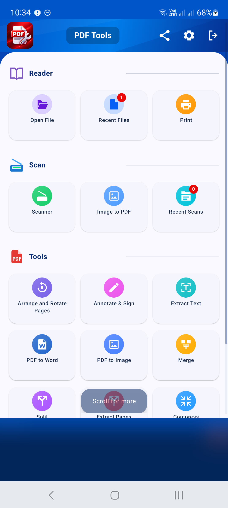
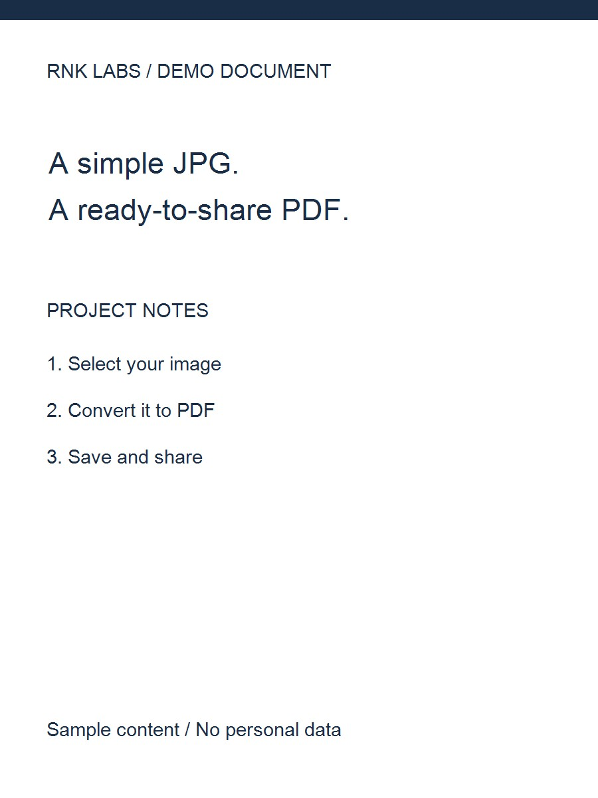
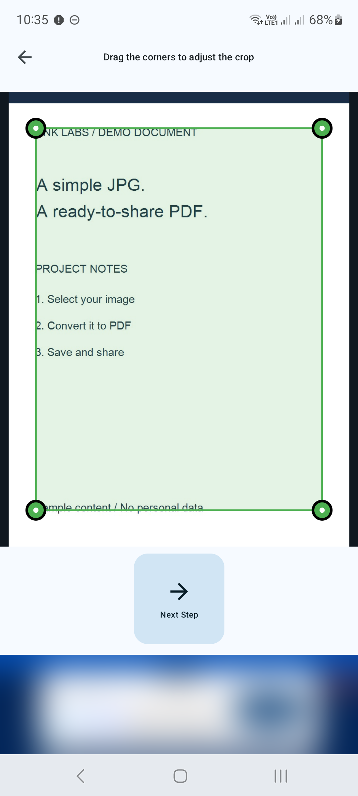
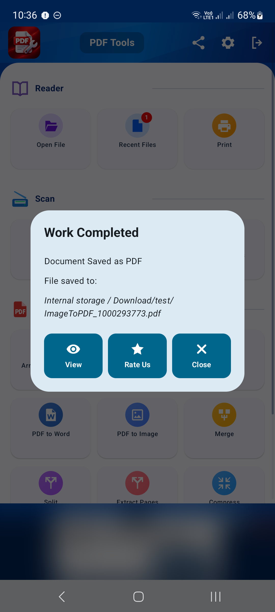

CONVERTISSEUR PDF / TUTORIEL ANDROID
Comment numériser des documents sur Android
Transformez un document papier en PDF avec l'outil Scanner. Capturez la page, affinez le recadrage et examinez le résultat avant de l'enregistrer.
Les captures d'écran montrent l'interface de l'application en anglais. Les noms de boutons traduits peuvent différer des étiquettes dans les images.
ÉTAPE 01 / 04
Ouvrir le scanner
Sur l'écran d'accueil, recherchez la section Scanner et appuyez sur Scanner. Gardez la caméra arrière pointée vers votre document. Si Android demande l’autorisation de la caméra, autorisez-le à effectuer l’analyse.

ÉTAPE 02 / 04
Photographiez votre document
Placez la page entière dans la vue de la caméra. Tenez le téléphone stable et maintenez-le parallèle à la page. Utilisez la commande du flash si nécessaire et appuyez sur le bouton de l'obturateur Photographier un document. Évitez les ombres, les reflets et les doigts couvrant le texte.

ÉTAPE 03 / 04
Recadrer et revoir l'analyse
Faites glisser les poignées d'angle pour qu'elles correspondent aux bords du document et appuyez sur Étape suivante. Dans Vérification, choisissez le format et l'orientation du papier, ajustez l'emplacement de la page et utilisez la luminosité et le contraste pour améliorer la lisibilité.

ÉTAPE 04 / 04
Enregistrez votre numérisation au format PDF
Appuyez sur Enregistrer le PDF, choisissez une destination et un nom de fichier dans la boîte de dialogue d'enregistrement d'Android, puis confirmez. Une fois l'enregistrement terminé, utilisez Afficher pour inspecter le PDF. Vérifiez que le petit texte est lisible avant de partager.

Conseils pour un meilleur résultat
- Photographiez une page clairement encadrée à la fois.
- Reprenez une photo floue ; les contrôles de luminosité ne peuvent pas restaurer les détails manquants.
- Pour plusieurs PDF enregistrés, utilisez Fusionner pour les combiner.

COMMENCER SUR ANDROID
PDF Converter, Scanner & Tools
Convertissez JPG en PDF, PDF en Word, numérisez, lisez, fusionnez, compressez et bien plus encore.
Obtenez-le sur Google Play